Page 1 / 原始页码 1151
第 59 章 性与繁殖
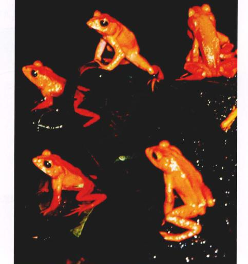
图 59.1 雄性金蟾蜍具有鲜艳的颜色用以吸引配偶 分布于哥斯达黎加 Monteverde Cloud 森林保护区的金蟾蜍几乎不发声，所以它们用自己鲜艳的颜色去吸引配偶。它们非常罕见，几乎濒临灭绝。
猫在发情期号叫，昆虫在窗外鸣叫，青蛙在沼泽地里鸣叫，狼在冰冷的北方森林里嚎叫，这一切都是进化过程的重要行为，这就是繁殖。这些截然不同的声音，还有一些动物（例如图 59.1 中的热带金蟾蜍）身上特有的鲜艳颜色，皆用于吸引配偶。每天萦绕于它们脑海中的除了性以外没有更多其他的内容，也没有什么欲望能够比性欲更持久。这一章将讨论脊椎动物的性与生殖，包括人类。
Page 2 / 原始页码 1152
59.1 动物采取有性和无性两种生殖方式
59.1.1 无性生殖和有性生殖
无性生殖是原生生物、刺胞动物和被囊类动物的基本生殖方式，但是无性生殖也发生在一些复杂的动物中。实际上，上一对完全相同的孪生体的形成（将早期胚胎分裂形成的两个完全相同的细胞各自分开）就是一种无性生殖方式。
经过有丝分裂，由一个母细胞产生了所含基因完全相同的子细胞。原生生物可以通过生物体的分裂而进行无性生殖，这也叫做裂殖 (fission)。刺胞动物通常进行出芽生殖 (budding)，即母体的一部分与自身其他部分分离而成为一个新的个体。新的个体有可能成为一个独立的动物，也有可能附着在母体身上形成一个群落。
通过两性细胞即配子 (包括精子和卵) 结合形成新个体的过程称为有性生殖。精子与卵细胞结合形成受精卵 (fertilized egg)，或合子 (zygote)，经过有丝分裂形成一个多细胞生物体。受精卵与有丝分裂产生的细胞都属于二倍体，它们都分别含有两个配子的同源染色体。但由性器官或性腺 (gonad) ——精巢 (testis) 和卵巢 (ovary) ——经过减数分裂产生的配子却是单倍体（见第12章）。精子与卵子的产生过程将会在后面的部分介绍。有性生殖与无性生殖的详细介绍见第12章。
1) 不同的性别策略
孤雌生殖 (parthenogenesis) (雌性利用未受精的卵产生后代) 在许多节肢动物中非常常见。有一些动物只进行孤雌生殖（只有雌性个体），其他的动物则交替地在不同的世代进行有性生殖或孤雌生殖。例如：蜂王只交配一次，并将精子储存起来，它可以控制精子的释放。如果精子没有被释放，卵细胞就通过孤雌生殖发育成为雄蜂；如果精子被释放并与卵细胞结合，则受精卵发育成力另一个蜂王或雌性的工蜂。
1958年，俄国生物学家 Ilya Darevsky 报道了脊椎动物中第一例不寻常的生殖方式。他注意到蜥蜴属 (Lacerta) 的一些小蜥蜴的种群中只有雌性个体，即使没有经过受精，这些蜥蜴也可以产下有生育能力的卵。换句话说，它们可以在没有精子的情况下进行无性生殖，这就是孤雌生殖。更深入的研究表明，其他蜥蜴属的种群中也存在孤雌生殖。
另一个生殖策略的变异是雌雄同体 (hermaphroditism)，也就是一个个体既有卵巢也含有精巢，因此，它既可以产生精子也可以产生卵细胞（图 59.2a）。绦虫是雌雄同体动物，可以进行自体受精，因为要遇见另一个绦虫相对来说比较困难，所以这种自体受精的方式是很有用的。然而大多数雌雄同体的动物也需要另一个个体完成异体受精。例如蚯蚓的生殖过程就需要两个个体。
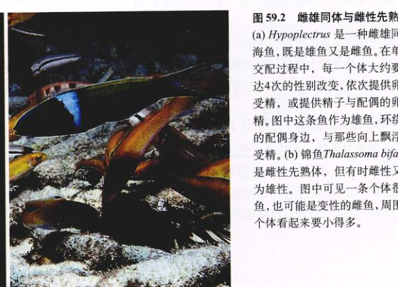
图 59.2 雌雄同体与雌性先熟 (a) Hypoplectrus 是一种雌雄同体的深海鱼，既是雄鱼又是雌鱼。在单个配对交配过程中，每一个体大约要经历多达4次的性别改变，依次提供卵子用以受精，或提供精子与配偶的卵细胞受精。图中这条鱼作为雄鱼，环绕在静止的配偶身边，与那条向上飘浮的卵子受精。(b) 蓝头锦鱼 Thalassoma bifasciatium 是雌性先熟体，性成熟时是雌性又转变为雄性。图中可见一条体很大的雄鱼，也可能是变性的雌鱼，周围的雌性个体看起来要小得多。
Page 3 / 原始页码 1153
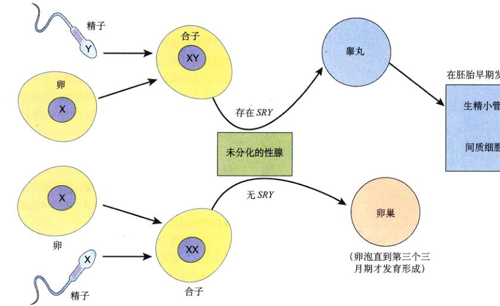
图 59.3 哺乳动物的性别是由 Y 染色体中被称做 SRY 的区域所决定的 当 Y 染色体和 SRY 基因存在时，性腺分化形成睾丸；当不含有 Y 染色体和 SRY 基因时，性腺分化形成卵巢。
来完成，每一个体既充当雄性又充当雌性，分开后各自产生一个受精卵。
有一些深海鱼类也是雌雄同体——既是雌性也是雄性。许多鱼类可以通过依序两性同体 (sequential hermaphroditism) 而改变它们的性别。例如，一种珊瑚礁鱼，有些是雌性先熟 (protogyny) (“首先是雌性”，再由雌性变为雄性)，另一些则是雄性先熟 (protandry) (“首先是雄性”，再由雄性变为雌性)。在雌性先熟的鱼类个体中（图 59.2），性别的改变似乎是受群体的控制。这些鱼类生活在一个大的群体里，在这个群体中，成功的生殖受到一个或一些较大的、且占统治地位的雄性个体的限制。如果这些雄性个体迁出，大量的雌性个体会迅速地改变性别成为具有支配力量的雄性个体。
2) 性别的确定
除了上述那些鱼类，还有一些爬行动物经常因为环境的变化而改变性别。而哺乳动物的性别早在胚胎发育时期就已经确定了。在怀孕后的前40天，雄性与雌性的生殖系统看起来没有多大的区别。在这段时间里，将要形成卵子或精子的细胞从卵黄囊中迁移到胚胎的性腺，性腺同时具有发育成力雄性的卵巢和雄性的睾丸的潜能。因此，胚胎的性腺是未分化的。如果胚胎是雄性，就含有 Y 染色体，Y 染色体的某个基因的表达产物能够促使未分化的性腺发育为睾丸；同样，如果胚胎是雌性，则不含有 Y 染色体以及 Y 染色体所携带的基因及其编码的蛋白质，所以性腺将发育成为卵巢。近期的研究表明，这个性别的决定基因被称为“SRY”（代表“Y 染色体的性别决定区域”）（图 59.3）。SRY 基因在不同脊椎动物的进化过程中是高度保守的。
一旦睾丸在胚胎的发育过程中形成，就开始分泌睾酮激素和其他的激素，以促进外生殖器以及其他附属器官的发育。如果胚胎中没有睾丸（在这个阶段，卵巢的功能还没有体现出来），那么胚胎将分化产生雌性外生殖器以及一些附属的器官。换而言之，除非有睾丸分泌的激素使胚胎雄性化，否则所有哺乳动物的胚胎将发育形成雌性外生殖器及附属器官。
Page 4 / 原始页码 1154
59.2 脊椎动物的生殖进化过程导致了体内受精与发育
59.2.1 受精与发育
早在由水登陆之前，脊椎动物有性生殖的进化就在海洋中发生了。许多生活在海里的雌性硬骨鱼类产出大量的卵释放到水中，雄性通常将精子释放到含有卵细胞的水中，两个自由配子的结合便发生了。这个过程被称为体外受精 (external fertilization)。
对配子来说，虽然海水并不是一个很危险的环境，但是它却使配子迅速地散开，因此雌性与雄性动物不得不同时释放出精子与卵子。因此，大多数海鱼控制它们的排精与产卵，使其只发生在某一个短暂的时期。一些动物一年只进行一次生殖，其他的动物要稍稍微频繁一些。海洋中一些周期性的变化被生物体当作同步生殖的信号，其中最普遍的信号是月亮的周期性变化。每个月，月亮都有一次离地球较近的时期，这时候，月球对地球的吸引力增大，便发生涨潮现象。许多海里的生物对潮汐的变化非常敏感，因而其配子的产生及释放与月亮运行周期相。
动物登陆以后，繁殖面临新的干燥的危险，这个问题对于那些体积小而且易受伤害的配子来说尤为严重。在陆地上，配子不可能被简单地释放到每一个角落，因为它们很快会干枯而死亡。因此，自然选择的巨大压力使得陆生动物（也包括一些鱼类）不得不进化而采取另一种受精方式——体内受精 (internal fertilization)，即是将雄性配子输入到雌性个体的生殖道内。通过这种方式，即使成年的动物是完全的陆生动物，受精过程仍然是在液体环境中完成的。体内受精的脊椎动物的胚胎或胎儿的发育方式有3种：
(1) 卵生 (oviparity)：硬骨鱼类、大多数的爬行动物，还有一些软骨鱼类、两栖类动物，少数哺乳动物以及所有的鸟类采取这种方式。在体内完成受精的卵被母体产出体外，完成整个发育过程。
(2) 卵胎生 (ovoviviparity)：某些硬骨鱼类（如虹鳉和食蚊鱼）、软骨鱼类以及许多爬行动物都采取这种方式。受精卵留在母体内完成发育，但胚胎仍然从卵黄内吸收发育过程所需要的全部营养，当幼体被孵化并从母体内产出时便发育完全。
(3) 胎生 (viviparity)：大多数软骨鱼类、一些两栖类动物、少数爬行动物和几乎所有的哺乳动物都采取这种方式。幼体在母体内发育，营养直接从母体的血液里获取，而不是从卵黄中吸取（图 59.4）。
59.2.2 鱼类和两栖类动物
鱼类和两栖类与其他脊椎动物不相同，它们大都采取体外受精的方式进行生殖。
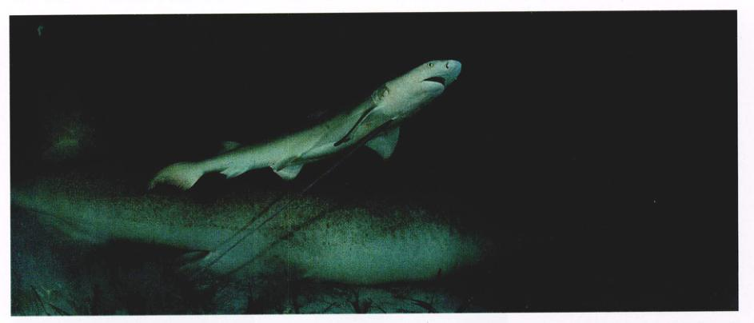
图 59.4 胎生型鱼类体内怀着游动的有生命的幼体 幼体在母体内完成发育过程，然后经母体产出，虽然很小，但却是具有生存能力的成体。图中是一条刚刚产下的幼柠檬鲨，小鲨鱼还连在母体的脐带上。
Page 5 / 原始页码 1155
1) 鱼类
大多数的硬骨鱼 (teleost) 采取体外受精的方式，其卵细胞中含有充足的卵黄，足以维持胚胎在一段短时间内发育所需要的营养。当卵黄内最初的营养物质耗尽之后，幼鱼必须在周围的水环境中寻找食物。其发育的速度是很快的，那些幸存的幼鱼迅速长成大熟。尽管在一次交配中有上千个卵子被受精，但有很多幼体因为微生物的感染或被其他动物吞食而死亡，只剩下一小部分幼鱼长成成熟。
与硬骨鱼类完全不同的是，大多数软骨鱼类实行体内受精。雄鱼通过特化的腹鳍将精子注入雌鱼的体内，这类脊椎动物的幼体多属于胎生。
2) 两栖类
两栖类动物登上陆地，但却没完全适应陆地上干燥的环境，它们的生活周期仍然受到水环境的制约。与硬骨鱼类相同，大多数两栖动物在体外受精。雄性与雌性的配子都通过泄殖腔排出体外。青蛙与蟾蜍的雄性抱住雌性的身体，释放出含有精子的液体，撒在已经释放入水中的卵上（图 59.5）。尽管大多数两栖类动物的卵在水中发育，但是还是存在一些有趣的例外。例如有一种青蛙，它们的卵在声囊中发育，幼体却是从雄蛙的口里产出；还有一种青蛙，它们的卵在胃中发育，幼体则从雌蛙的口里产出（图 59.6）。
两栖类动物的发育时间要比鱼类长得多，但是它们卵中含有的卵黄却并不比鱼类的多多少。不同的是，大多数两栖类动物的发育过程被分成胚胎期、幼体期和成体3个阶段。这使我们联想起一些昆虫的生活史。胚胎在卵中发育，从卵黄中吸取营养。从卵中孵化出来以后，水生的幼体可以自由游动取食，通常经历相当长的一段生活时间。幼体可迅速长大，青蛙和蟾蜍的幼体——蝌蚪——只需要几个星期的时间就可以从一个铅笔尖大小长成一个与金鱼等体积的个体。当幼体长到足够大的时候，要经历一个变态的过程，变成陆栖的成体。

图 59.5 青蛙的卵在体外受精 当青蛙进行交配时，雄蛙抱住雌蛙，使其产下大量成熟的卵，随后雄蛙排出精子，撒在卵上，使卵受精。
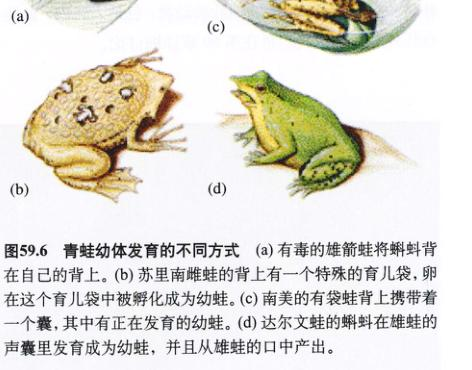
图 59.6 青蛙幼体发育的不同方式 (a) 有毒的雄箭蛙将蝌蚪背在自己的背上。(b) 苏里南雌蛙的背上有一个特殊的育儿袋，在这个育儿袋中被孵化成为幼蛙。(c) 南美的一袋蛙背上携带着一个囊，其中有正在发育的幼蛙。(d) 达尔文蛙的蝌蚪在雄蛙的声囊里发育成幼蛙，并且从雄蛙的口中产出。
Page 6 / 原始页码 1156
59.2.3 爬行动物和鸟类
大多数爬行动物和所有的鸟类都是卵生，卵在体内受精之后被产出，在母体外完成发育。与大多数的脊椎动物一样，爬行动物采取体内受精的方式，雄性通过一个管状的阴茎将精子射入雌性的体内（图 59.7）。阴茎具有可以勃起的组织，从而能够变得非常坚硬并深深插人雌性的生殖道内。大多数爬行动物是卵生，它们产卵之后便不再过问。这些卵由坚韧的外壳包裹着，从产卵管（由卵巢引出的生殖道的一部分）中产出。有一小部分爬行动物是卵胎生或胎生，卵在母体内发育成胚胎。
大多数的雄鸟都没有阴茎，但鸟类依然采取体内受精的方式。但是有一个体比较大的鸟类（如天鹅、鹅和鸵鸟）雄鸟的泄殖腔延展长形成假阴茎。当鸟沿水生殖道前进时，腺体分泌出清蛋白和硬的钙质的壳，这一点与爬行动物的卵是有区别的。现存的爬行动物都是变温动物（动物的体温随着环境的温度而变化），而鸟类是恒温动物（动物的体温保持相对恒定，不随着环境的温度改变而改变）。因此，大多数鸟类在产下卵后为了保持卵的温度而要进行孵化（图 59.8）。大多数鸟类孵化出的幼体不能独立生存，因为它们的发育是不完全的。这些幼鸟由亲鸟喂养，逐渐成熟。
爬行动物和鸟类具有带壳的卵体现了这些脊椎动物对于陆地生活最重要的适应性，因为带壳的卵可以产在干燥的地方。因为胚胎在一个被羊膜包裹着的充满液体的羊膜腔内完成发育，所以这种卵被称为羊膜卵 (amniotic egg)。羊膜是一种胚外膜，也就是说，膜是由胚胎细胞产生的，但是却存在于胚胎的外面。羊膜卵还包含有其他的二些胚外膜，例如位于卵壳内面的绒毛膜、卵黄囊和尿囊膜。相反，鱼类和两栖类的卵只含有一种胚外膜——卵黄囊。胎生的哺乳动物，包括人在内，也具有胚外膜，这点我们将在第60章详细讨论。

图 59.8 正在孵卵的冠企鹅 这对孵卵的冠企鹅正在轮流担负警戒工作。
59.2.4 哺乳动物
有些哺乳动物是季节性的繁殖者，它们一年只繁殖一次，而其他动物的繁殖周期更短一些。雌性的哺乳动物通常要经历一个生殖周期，但雄性的生殖行为要持久一些。雌性的生殖周期体现在周期性地从卵巢中释放出成熟的卵子，这个过程叫做排卵 (ovulation)。大多数的雌性哺乳动物只有在排卵期能够接受雄性性行为。这段接受性行为的时期称为发情期 (estrus)，生殖周期也因而被称为发情周期 (estrous cycle)。雌性的发情周期可持续到怀孕。
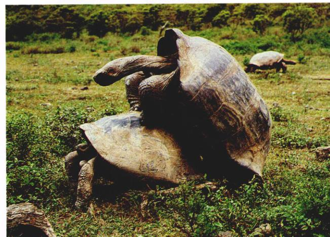
图 59.7 雄性将精子射入到雌性体内 的过程叫做交配 乌龟是第一个利用这种方式进行生殖的陆生爬行动物，这种生殖方式尤其适用于陆地的环境。
Page 7 / 原始页码 1157
在大多数哺乳动物的发情期里，脑垂体前叶分泌的促卵泡激素 (FSH) 和黄体生成素 (LH) 水平的变化导致了卵巢中卵泡的发育和激素分泌水平的变化。从周期性的激素分泌和排卵方面来说，人和类人猿的月经周期与其他哺乳动物的发情周期非常相似。但是，与哺乳动物发情周期不同的是，人和猿的雌性在子宫内膜脱落的时候会出血，这个过程叫做做月经 (menstruation)，在这个周期的任何时间里都愿意进行交配。
兔子和猫与其他大多数哺乳动物不同，它们属于诱导产卵者。雌性只在交配以后受黄体生成素 (LH) 的刺激而产卵，而非其他动物那样无论是否有性行为都进行周期性地排卵。这一点使得这些动物繁殖力很强。
最原始的哺乳动物——单孔类动物 (monotreme) (包括鸭嘴兽和针鼹)，与它们的祖先爬行类动物一样都是卵生的，它们在巢穴中或在特有的卵袋中孵卵（图 59.9a），因为这类动物通常没有乳头，所以孵化出的幼体通过舔食母亲的皮肤而从乳腺中得到乳汁。所有其他的哺乳动物都是胎生的，并且根据它们哺育幼息的方式而被分为两个亚类。有袋类动物 (marsupial)，包括负鼠和袋鼠，它们产出的胎儿未发育完全，要在母亲皮肤上的育儿袋中继续完成发育，它们吸吮母亲的乳头，从乳腺中吸取乳汁（图 59.9b）。胎盘类哺乳动物 (placental mammal)（图 59.9c）的幼体要在母亲的子宫中呆较长的时间进行发育。幼体通过胎盘（由胚外膜绒毛膜与母体的子宫内膜共同组成）获取营养。由于胎盘中胎儿血管与母亲的血管非常贴近，所以可以直接通过过滤母体的血液获取营养。关于胎盘的功能我们将在第60章进行详细的介绍。
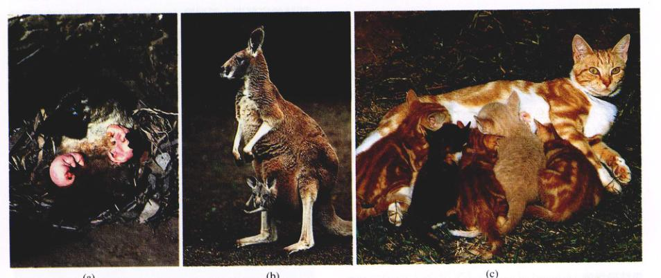
图 59.9 哺乳动物的繁殖 (a) 单孔类动物，如图中的鸭嘴兽，在巢穴中产卵。(b) 有袋类动物，如这只袋鼠，产下的胎儿在育儿袋中完成发育。(c) 胎盘类哺乳动物，如这家猫，幼体在母亲的胎盘中要经历更长的发育时间，因此产下的胎儿发育得相对完全一些。
59.3 雄性和雌性生殖系统特化行使不同的功能
59.3.1 雄性生殖系统的结构和功能
人是典型的哺乳动物、男性生殖系统的结构如图 59.10 所示。如果人的胚胎发育过程中形成了睾丸，那么在怀孕开始 43~50 天左右，生精小管 (seminiferous tubule)（又称曲精小管）开始发育。生精小管是产生精子的地方。在怀孕 9~10 周的时候，位于生精小管间缝隙组织内的间质细胞 (Leydig cell) 开始分泌睾酮 (testosterone) 激素（男性主要激素，或称性激素）。在胚胎发育期分泌的睾酮激素，将未分化的结构转变为男性的生殖器，阴茎 (penis) 和阴囊 (scrotum)（含有睾丸的囊）。如果胚胎发育过程中没有分泌出睾酮激素，则未分化的结构将会发育成为女性的外生殖器。
Page 8 / 原始页码 1158
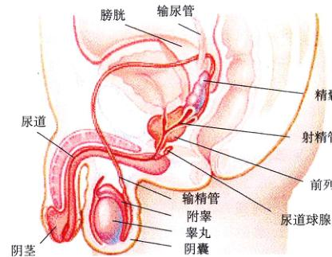
图 59.10 男性生殖系统结构 阴茎和阴囊属于外生殖器，睾丸属于生殖腺，而其他的器官则构成了附属生殖器官，帮助形成精液并射精。
成年的睾丸主要由许多高度缠绕的生精小管构成（图 59.11）。尽管睾丸是在腹腔内形成的，但在胎儿出生的前一段时期，睾丸便从一个被称为腹股沟管的开口处下沉进入阴囊，悬挂在腹腔外。阴囊使得睾丸的温度保持在 34°C，比体内的体温 (37°C) 稍低，这个稍低一些的温度有利于人精子的生成。
1) 精子的产生
生精小管壁中含有生发细胞 (germinal cell)（可以通过减数分裂生成精子）以及起支撑作用的支持细胞 (sertoli cell)。靠近生精小管外表面的生发细胞是二倍体（人类具有 46 条染色体），但是靠近管道内腔的细胞则是单倍体（每个细胞含有 23 条染色体）。每一个母细胞通过有丝分裂使细胞数量加倍。在分裂形成的 2 个子细胞中，其中的一个经过减数分裂形成精子，另一个子细胞则继续作为母细胞。通过这种方式，男性绝对不会因为没有母细胞而无法产生精子。成年男性在有生之年每一天大概产生 1 亿 ~ 2 亿个精子。
那些将要经历减数分裂的二倍体的子细胞被称为初级精母细胞 (primary spermatocyte)。它含有 23 对同源染色体（人类），每一条染色体加倍，具有 2 条染色单体 (chromatid)。第一次减数分裂将同源染色体分开，形成 2 个单倍体的次级精母细胞 (secondary spermatocytes)。但是每条染色体仍然含有两个完全相同的染色单体。然后这些细胞经历第二次减数分裂，将染色单体分开，产生 2 个单倍体的细胞——精细胞 (spermatid)。因此，一个初级精母细胞总共产生了 4 个单倍体的精细胞（图 59.11）。所有的这些细胞构成了生精小管的生长上皮，从而产生配子。
除了生殖上皮之外，生精小管壁内还包含许多非生发细胞，例如支持细胞。支持细胞为发育中的精子提供营养，并且分泌精子发生所需要的激素，同时还通过吞噬多余的细胞质使精细胞转变为精子 (spermatozoa)。
精子是一种相对简单的细胞，由头部、体部和尾部组成（图 59.12）。头部包含一个致密的细胞核，并被称为顶体 (acrosome) 的囊泡（来自于高尔基体）覆盖。顶体中含有酶，可以帮助精子穿透卵子周围的保护层。精子体和尾部具有一个推动机制：尾部是鞭毛，精子体内有中心粒和线粒体。前者作为鞭毛运动的基体，后者为鞭毛运动供能。
2) 男性附属器官
精子在生精小管中生成之后，即被送入细长的螺旋状的管道——附睾 (epididymis) 内（图 59.13）。精子到达附睾后必须停留至少 18h 以便获得运动能力。精子由附睾又进入另一条长管道——输精管 (vas deferens) 中，输精管再将精子由腹股沟注入腹腔内。
从每个睾丸发出的输精管与一对精囊 (seminal vesicle) 发出的一条管道（图 59.10）汇合，精囊可以产生富含果糖的液体。在此处，输精管继续作为射精管，由膀胱的底部进入前列腺 (prostate gland)。人的前列腺的大小与高尔夫球的大小相近，是海绵状的腺体。精液的60% 为前列腺分泌的液体，精液包括睾丸产生的精子、精囊分泌的液体，以及前列腺分泌的液体。在前列腺内，射精管与尿道 (urethra) 合并，尿道又与膀胱相通。尿道载着精液通过阴茎头射出体外。一对豌豆大小的尿道球腺 (bulbourethral gland) 能分泌一种液体，使得尿道伸直，并润滑阴茎的龟头以便性交。
除了尿道之外，还有柱状的勃起组织 (erectile tissue)，其中包括 2 个位于阴茎背部的阴茎海绵体 (corpora cavernosa)，另一个位于阴茎的腹侧，即尿道海绵体 (corpus spongiosum)（图 59.14）。阴茎的勃起受自主神经系统的副交感神经分支的神经元支配。这些神经元释放一氧化氮，导致动脉的微动脉膨大，致使勃起组织充血膨胀。勃起组织中增大的压力压迫静脉血管，使血液流进阴茎，但却不能流出。药物伟哥 (Viagra) 可以通过刺激阴茎中 NO 的分泌而延长勃起的时间。一些哺乳动物，例如海象，它们的阴茎中含有一根骨，以保证阴茎勃起时的坚硬度，但人类却没有这种结构。
Page 9 / 原始页码 1159
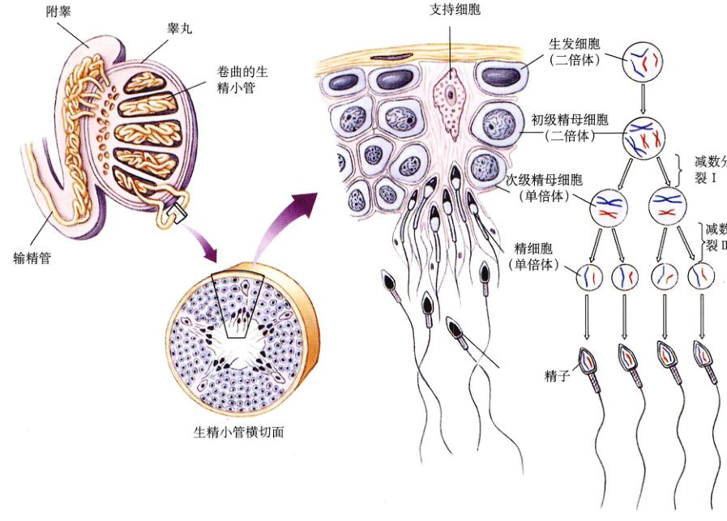
图 59.11 睾丸的结构及精子的产生 睾丸内部的生精小管是产生精子的地方。生精小管中的生发细胞通过减数分裂产生精子。生精小管壁中的支持细胞不属于生发细胞，它们在许多方面帮助精子生成，例如促进精细胞转变成精子。初级精母细胞是二倍体，在第一次减数分裂之后，同源染色体分开形成了 2 个单倍体的次级精母细胞。第二次减数分裂，姊妹染色单体分开，形成了 4 个单倍体的精细胞。
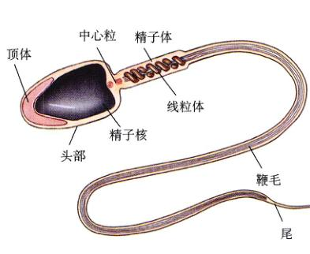
图 59.12 人的精子 (a) 扫描电镜图。(b) 精子结构图。
Page 10 / 原始页码 1160
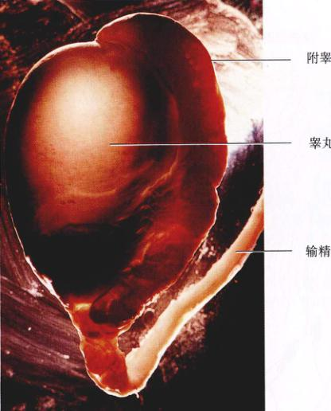
图 59.13 人的睾丸 图中中央深色的圆形物就是睾丸，精子就在睾丸中生成。它周围的弧状物是附睾，精子通过附睾中螺旋的管道而成熟。成熟的精子储存在由附睾延伸出的长长的精管中。
阴茎勃起与维持的性刺激导致了射精，从阴茎中射出的液体大概大概含有 5 ml 的精液，平均每毫升大约含有 3 亿个精子。成功的受精作用需要这么多的精子，因为这使得每一个精子成功地完成长途跋涉接触到卵子并受精的几率变得非常的大，在某个精子穿透卵细胞之前，一些精子的顶体需要为卵细胞互相作用。如果男性每毫升精液中精子的含量少于 2 亿个，就不具有生育能力了。尽管精子的数量很大，但它只占射出精液体积的 1%。
3) 男性生殖的激素调节
正如我们在第56章中所讨论的，垂体前叶分泌两种促性腺激素：促卵泡激素 (FSH) 和黄体生成素 (LH)。虽然这两种激素是根据它们在女性体内的功能而命名的，但是它们也起着调节男性生殖功能的作用（表 59.1）。在男性体内，FSH 刺激支持细胞促进精子的生成，而 LH 则刺激间质细胞分泌睾酮。
我们在第56章所讨论的负反馈抑制原理将应用于 FSH 和 LH 的分泌调控机制（图 59.15）。下丘脑激素是一种促性腺激素释放激素 (GnRH)，它刺激垂体前叶分泌 FSH 和 LH。FSH 促使支持细胞分泌一种肽类激素，叫抑制素 (inhibin)，它可以特异性地抑制 FSH 的分泌。同样，LH 促进睾酮的分泌，但睾酮的分泌又反过来特异性地抑制 LH 的分泌。这两种调节都是直接通过垂体前叶和间接通过减少 GnRH 的释放而实现的。负反馈抑制的重要性可以通过阉割试验而得到验证。当缺少了睾酮和抑制素之后，垂体前叶分泌的 FSH 和 LH 的量明显提高。
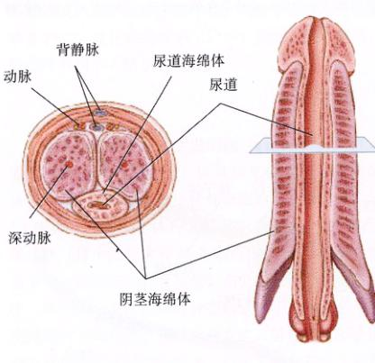
图 59.14 阴茎的横切面（左图）与纵切面（右图） 注意尿道穿过了尿道海绵体。
59.3.2 雌性生殖系统的结构和功能
女性生殖系统的结构如图 59.16。与睾丸不同的是，卵巢的发育要慢得多。在没有睾酮分泌的情况下，女性的胚胎在与男性发育出阴茎和阴囊的相同结构中发育出了阴蒂 (clitoris) 和阴唇 (labia majora)。因此，阴蒂与阴茎，阴囊与阴唇被称为同源器官。与阴茎相似，阴蒂也具有海绵体，因此也可以勃起。卵巢有一种微结构，叫卵泡 (ovarian follicle)，每一个卵泡中都含有一个卵细胞和一些较小的颗粒细胞 (granulose cell)。卵泡是卵巢的功能单位。
Page 11 / 原始页码 1161
表 59.1 哺乳动物的性激素
| 激 素 |
作 用 |
| 雄性 |
| 促卵泡激素 (FSH) |
刺激精子生成 |
| 黄体生成素 (LH) |
刺激间质细胞分泌睾酮 |
| 睾酮 |
刺激男性第二性征以及附属生殖器官的形成，并维持性状 |
| 雌性 |
| 促卵泡激素 (FSH) |
刺激卵泡的生长和雌激素的分泌 |
| 黄体生成素 (LH) |
刺激排卵，促进卵泡转变为黄体，并发育黄体分泌孕酮和雌激素 |
| 雌激素 |
刺激女性第二性征的形成，并维持性状。每月定期刺激子宫为怀孕做好准备 |
| 孕酮 |
完成子宫的怀孕准备，帮助维持第二性征 |
| 催产素 |
刺激子宫收缩和诱导泌乳反射 |
| 催乳素 |
刺激乳汁的产生 |
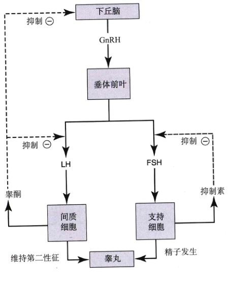
图 59.15 睾丸和垂体前叶的激素 LH 刺激间质细胞分泌睾酮，而 FSH 促使生精小管中的支持细胞分泌抑制素。睾酮和抑制素分别对 LH 和 FSH 的分泌发挥负反馈抑制作用。
在青春期，颗粒细胞开始分泌雌性激素——雌二醇 (estradiol) (也叫雌激素)，引发月经初潮 (menarche)，也就是月经周期的开始。雌激素同时也刺激女性第二性征 (female secondary sexual characteristics) 的发育，包括乳房的发育和阴毛的生长。除此之外，雌激素和另一种类固醇激素——孕酮 (progesteron) 还参与了女性附属生殖器官输卵管、子宫和阴道的形成，并维持其结构和功能。
1) 女性附属生殖器官
输卵管 (fallopian tube, uterine tube, oviduct) 将卵子从卵巢运送到子宫 (uterus)。人的子宫是一个梨形的肌肉组织，一端变窄形成子宫颈，伸向阴道（图 59.17）。子宫腔内覆盖着一层单层柱状上皮，叫子宫内膜 (endometrium)。在月经周期，子宫内膜的表层脱落，而表层下面的部分则不脱落，并准备在下个周期中形成新的表层。
除灵长类动物之外的哺乳动物具有更复杂的雌性生殖管道，子宫的一部分被分开形成通向输卵管的子宫“角”（图 59.17b、c）。例如猫、狗和牛，它们只有一个子宫颈，但却有两个被隔膜（或壁）分开的子宫“角”。有袋类动物，例如负鼠，它们的分裂程度更大，含有不相连的子宫“角”和 2 个子宫颈以及 2 个阴道。雄性的有袋类动物具有叉状的阴茎，可以同时插入雌性的 2 个阴道内。
Page 12 / 原始页码 1162
2) 月经和发情周期
出生时，女性的卵巢中含有大约 200 万个卵泡，每个卵泡都含有一个处于第一次减数分裂前期卵细胞。在这个阶段的卵细胞被称为初级卵母细胞。在每一个月经周期中都会有一些含有初级卵母细胞的卵泡被刺激继续发育。人的月经周期 (menstrual cycle，拉丁文 mens，意思是“月”) 大约为 1 个月（平均为 28 天）。按照卵巢的变化，可以将月经周期分为卵泡期和黄体期，介于其间的是排卵期。
3) 卵泡期
在卵泡期 (follicular phase)，一些卵泡受 FSH 刺激开始生长，但只有一个卵泡能发育成为完全成熟的三级卵泡 (tertiary)，或成熟卵泡 (Graafian follicle)（图 59.18）。这种卵泡在卵巢表面形成了一个薄壁的小泡。在卵泡期，初级卵母细胞在成熟卵泡内完成了它们的第一次减数分裂。然而，分裂后却没有形成 2 个同样大小的子细胞，而是形成一个稍大的次级卵母细胞和一个极小的子细胞，叫做极体 (polar body)。次级卵母细胞因此获得了初级卵母细胞中几乎所有的细胞质，一旦卵母细胞受精，便可以提高维持早期胚胎的几率。而极体通常就消失了。然后，次级卵母细胞开始第二次减数分裂，却停止在中期 II。卵细胞就是以这种形式从卵巢中排出，直到其在输卵管中受精之后才真正完成第二次减数分裂。
4) 排卵期
在卵泡期，血液中的雌激素水平不断增长，刺激脑垂体前叶分泌 LH，LH 的突然分泌使得发育完全的成熟卵泡在排卵过程中破裂，释放出次级卵母细胞。释放出的次级卵母细胞在输卵管伞部（围绕输卵管开口处的羽毛状突出物）附近进入腹腔。输卵管内壁的纤毛状上皮细胞推动卵母细胞从输卵管向子宫移动。如果次级卵母细胞没有受精，在排卵后的 1 天内分解消失；如果受精了，则会刺激次级卵母细胞完成第二次减数分裂，并形成另一个极体。精子和卵子的核融合在一起，形成了一个二倍体的合子（图 59.19）。受精过程通常发生在输卵管中远部三分之一处。人的受精卵大约要用 3 天的时间
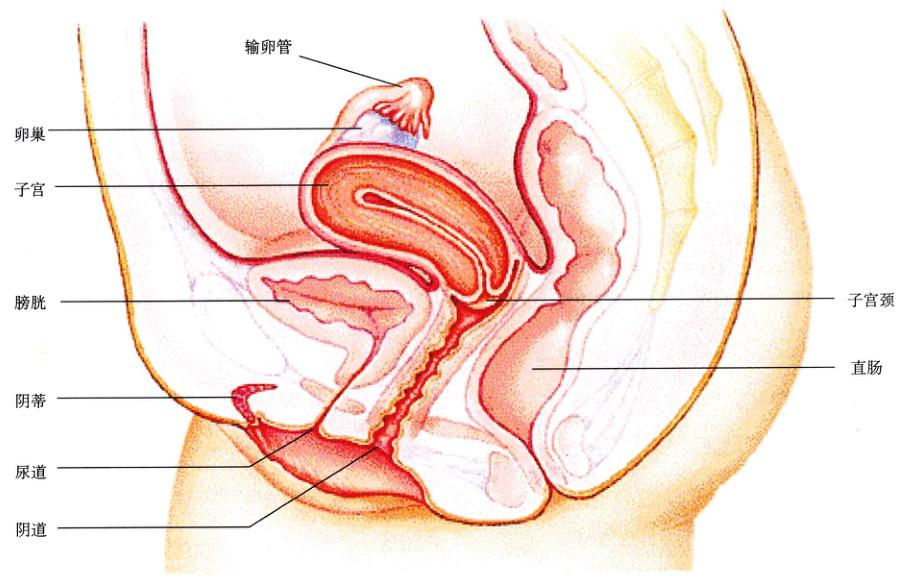
图 59.16 女性生殖系统的结构 卵巢属于生殖腺，排出的通过输卵管进入子宫，胎儿就在子宫里发育成长。
Page 13 / 原始页码 1163
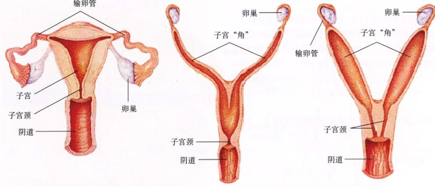
图 59.17 哺乳动物子宫的比较 (a) 人与其他灵长类；(b) 猫、狗和牛；(c) 老鼠和兔子。
才可以到达子宫，然后再用 2~3 天的时间植入子宫内膜（图 59.20）。
5) 黄体期
排卵以后，LH 刺激排空的成熟卵泡发育成为黄体 (corpus luteum)。由于这个原因，月经周期的第二阶段被称为黄体期 (luteal phase)。黄体可以分泌两种激素：雌激素和另一种类固醇激素——孕酮。在黄体期，血液里有大量的雌激素和孕酮，对脑垂体前叶分泌的 FSH 和 LH 发挥负反馈抑制效应。黄体期的这种抑制作用与中期雌激素对 LH 分泌的刺激作用正好相反，而 LH 的分泌导致了排卵。排卵后，雌激素和孕酮对 FSH 和 LH 的抑制作用正是一种自然的避孕机能，既阻止了其他卵泡的发育，也使得排卵无法继续进行。
在卵泡期，颗粒细胞分泌的雌激素逐渐增多，刺激了子宫内膜的生长。因此，月经周期的这个阶段也被称做子宫内膜的增生期 (proliferative phase)。在黄体期，雌激素与孕酮的共同作用使得子宫内膜充满了血管和腺体，并富含糖原。又因为子宫内膜中充满腺体，所以月经周期的这个阶段也被称为子宫内膜的分泌期 (secretory phase)（图 59.21）。
如果次级卵母细胞没有受精，黄体发生自相萎缩或退化，黄体期因而结束。这是通过分泌激素（雌激素和孕酮）抑制 LH 这种必需激素的分泌而实现的。许多哺乳动物的黄体的萎缩是在黄体溶解素 (luteolysin)（一种旁使得前列腺素，属于前列腺素）的帮助下完成的。在黄体期的末期，黄体的消失导致血液中雌激素与孕酮的含量急剧减少，这使得增生的子宫内膜脱落，并伴随着出血。这个过程就叫做月经 (menstrunation)。月经周期的这个阶段也因此称为子宫内膜的月经期 (menstrual phase)。
如果排出的次级卵母细胞被受精，就不会出现黄体的衰退以及随后的月经，而代之以小小的胚胎！这是通过分泌人绒毛膜促性腺激素 (hCG) 而实现的。绒毛膜促性腺激素是一种类似于黄体生成素的激素，由胚胎的绒毛膜分泌。hCG 通过维持黄体存在而保持了雌激素与孕酮的较高含量，因而也抑制了终止怀孕的月经的产生。因为 hCG 来自于胚胎的绒毛膜而不是母体，所以，所有妊娠试验都要检测这种激素。
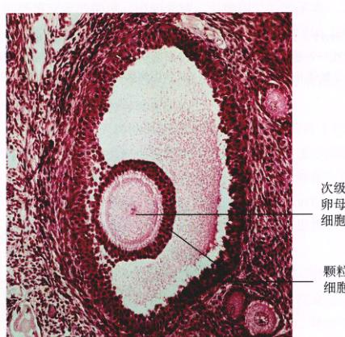
图 59.18 猫卵巢内的一个成熟卵泡 (50×) 请注意围绕在次级卵母细胞外的颗粒细胞环。排卵时，这个颗粒细胞环依然环绕着卵细胞，精子必须穿透这个环才可以与卵细胞的质膜接触。
Page 14 / 原始页码 1164
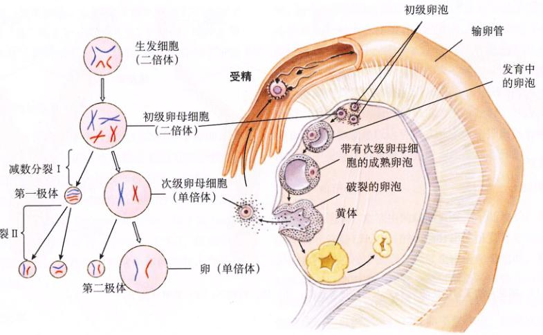
图 59.19 人卵子发生过程中的减数分裂 初级卵母细胞是一个二倍体。第一次减数分裂后，其中一个分裂产物作为极体被清除，而另一个是次级卵母细胞，在排卵期被排出。次级卵母细胞直到受精后才完成其第二次减数分裂。在第二次减数分裂后产生了一个第二极体和一个单倍的卵子（或称为卵细胞）。一个单倍的卵细胞和一个单倍的精子在受精时融合，形成了一个二倍的受精卵。
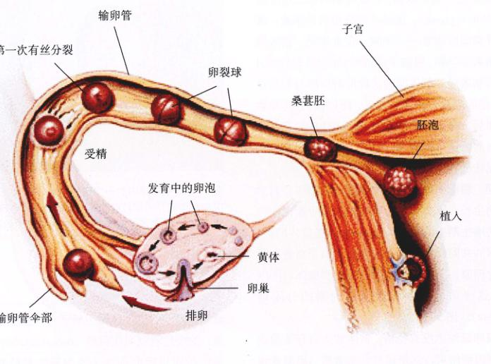
图 59.20 卵子的行程 卵子在卵泡中形成并且在排卵期被排出。卵子形成后进入输卵管，通过输卵管管壁上纤毛的摆动而前进。游入阴道的精子向上运动，在输卵管中与卵子受精。形成的受精卵要在输卵管中经历若干次有丝分裂，当它到达子宫的时候已经成为一个中空的细胞球，称做胚泡。胚泡植入子宫壁，并在此继续发育（为了清楚地说明整个过程，图中的卵细胞及其后续阶段都被放大了）。
Page 15 / 原始页码 1165
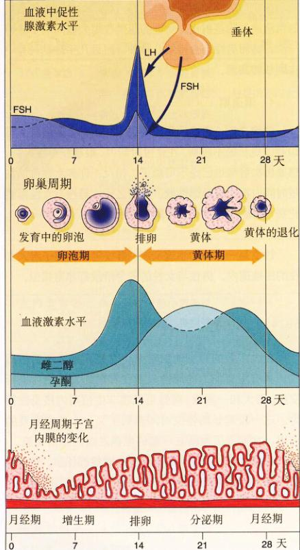
图 59.21 人的月经周期 在雌激素和孕酮的作用下，子宫内膜生长并增厚。这两种激素水平的下降也导致了月经，即子宫内膜的脱落。
有发情期的哺乳动物没有月经。虽然这些哺乳动物子宫内膜的细胞也会周期性脱落，但整个过程并不伴随着出血。发情期分为4个阶段：发情前期、发情期、发情后期和间情期。这4个阶段分别与月经周期中的子宫内膜的增生期、排卵期、分泌期和月经期相对应。
卵泡在FSH的刺激下发育，在LH的刺激下排卵。在卵泡期和黄体期，卵巢分泌的激素刺激子宫内膜的生长，以便受精后胚胎植入其中。排卵时，一个次级卵母细胞从卵巢中释放，只有受精的次级卵母细胞才可以完成减数分裂。
59.4 人类对性生理学已经有了较深入的了解
59.4.1 人的性生理
对人而言，很少有生理活动比性交更愉快。性的驱动力是引导人的行为的最强有力的驱动力，同时，性也受到许多准则和习惯的控制。性交已经成为人类最强烈的情感交流的渠道，例如爱情、柔情和个人的承诺。然而，很少有任何行为可以如此地隐秘，如此地吸引人。我们将要讨论有关性行为的很有限的一部分内容——它的直接的生理作用。性行为在情感交流方面也非常重要，但这不属于本书的讨论范围。
直到近期，人类性活动的生理机制才为人们所了解。可能是由于社会上对性问题的强烈的避讳，在这方面的研究非常少，因此也就缺乏许多详细的信息。然而在过去的 40 年中，William Wasters 和 Virginia Johnson 以及随后的一大批研究人员对此进行了详细的研究，揭露了人类的性行为的生物本质。
性行为还有许多与之相关的不同的名词，包括性交、交配以及许多专业性的名词。一般将伴随着性交过程的生理行为分为4个阶段：兴奋期 (excitement)、平台期 (plateau)、高潮期 (orgasm) 和 消退期 (resolution)，尽管这些阶段之间并没有明显的划分界限。
1) 兴奋期
性反应是受神经系统支配的。处于兴奋期的男女接受来自大脑的指令，使其呼吸速率和心跳的频率加快，血压升高。乳头通常变硬，也更加敏感，同时血管的直径变大，血液循环得以加速。有些人的上述变化会使其面部皮肤、乳房和生殖器发红（也就是性兴奋）。血液循环的加速使得血管收缩，致使男性的阴茎勃起，类似地使女性的阴蒂膨胀。女性在这个时期为了便阴道做好性交准备，经历了如下变化：大阴唇和小阴唇，即覆盖在阴道口边缘的组织，会因为血液循环的加速而膨胀分开，阴道壁会变得潮湿，同时，包围阴道的肌肉会变得较为松弛。
2) 平台期
阴茎插入阴道之后会持续刺激阴茎龟头和阴蒂的神经末梢。肿胀的阴蒂变得非常敏感，并慢慢向上缩而形成一个小帽。一旦缩回之后，阴茎的抽动会间接地刺激阴蒂鞘与阴蒂的摩擦。阴茎在阴道中反复地抽动所引起的神经刺激导致了自主神经系统的持续反应，大大增强了兴奋期所引起的生理变化。这一时期，女性的骨盆推力开始出现，男性的阴茎也是在这个时期最长也最硬。
Page 16 / 原始页码 1166
3) 高潮期
当刺激足够充分时，就达到了性交的高潮，并引起了一系列反射性的肌肉收缩。引起肌肉收缩的神经刺激与其他的一些中枢神经系统的反应综合在一起，给人们带来了极其愉快的感受。女性的肌肉收缩是由下丘脑的刺激所引起的，并导致了脑垂体分泌大量的催产素。这种激素刺激使得子宫肌肉痉挛，阴道开口处收缩，子宫颈被向上拉。肌肉的收缩大概每秒钟一次。大概会有一次或几次强烈的收缩高峰（也叫做高潮）。高潮可以有多次，但强度减弱。
男性也有类似的收缩现象。第一次收缩发生在输精管和前列腺，引起发射 (emission)，精子与精液蠕动进入位于阴茎基部的尿道汇集区 (colleting zone)。接着，阴茎基部肌肉的强烈收缩导致射精 (ejaculation)，将聚集的精液通过阴茎射出。女性的肌肉收缩大概间隔 1 秒钟一次，然而男性却会持续几秒钟，而且几乎总是只有一次剧烈的高潮。
4) 消退期
射精之后，男性的阴茎勃起很快消失，紧接着会有 20 秒或更长的不应期。在这段时期内，很难获得性兴奋，想要再次射精也已经不可能了。相反，许多女性可以在短时间内再次被激起性欲。性交之后，男性与女性都要花费一段时间恢复到正常的生理状态。
59.4.2 避孕
在大多数的脊椎动物看来，交配只是为了繁衍后代。具有生育能力的雌性只能在有限的发情期内进行交配。而人和一些猿，雌性可以在非生殖期内接受性行为。这一段延长的性交时间起到了又一个非常重要的作用，它增强了生活在一起的配偶之间的感情交流。
人类夫妻并不想在每次性交的时候都怀孕，然而性交又是他们感情交流所不可或缺的重要方式。因此，为解决这个矛盾，我们必须在性交时避免怀孕，这种方法就叫做避孕 (birth control, contraception)。各种不同的避孕方法有不同的效应，对不同的夫妻也有不同的功效（图 59.22 和表 59.2）。
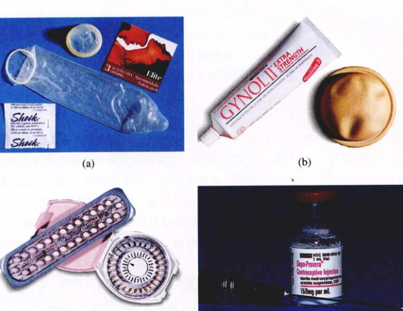
图 59.22 四种常见的避孕方法 (a) 避孕套。(b) 隔膜和杀精子凝胶。(c) 口服避孕药。(d) Depo-Provera 注射避孕药。
Page 17 / 原始页码 1167
表 59.2 避孕的方法
| 方 法 |
功 能 |
失败率* |
优 点 |
缺 点 |
| 口服避孕药 |
激素（只含有孕酮类激素，或其他激素相结合），主要是阻止卵细胞的产生。 |
1%~5%，根据种类的不同而定 |
方便，高效，提供了较为显著的非避孕的保健作用，例如防止卵巢癌和子宫内膜癌。 |
必须经常服用，新产品中的副作用有所减小；具有心血管疾病的女性不可服用（包括大部分35岁以上的吸烟女性）。 |
| 避孕套 |
收集精液的阴茎套和女用阴道套。 |
3%~15% |
使用方便，有效，便宜，可防止一些性病的传播。 |
需要男性的配合，减少了自发性，久置易失效。 |
| 子宫帽 |
一种覆盖子宫入口的柔软的橡胶帽，防止精子接触到卵细胞，其中含杀精剂。 |
4%~25% |
没有危险的副作用，如果使用正确，将非常保险，防止性病的传播以及宫颈癌。 |
需要非常仔细地安置，插入与拆卸时会有些不适感，性交过程中容易脱落。 |
| 宫内节育器 (IUD) |
放在子宫内的小的塑料或金属类器械。抑制受精卵着床，有些含铜，有些会释放激素。 |
1%~5% |
方便，高效，很少有移位。 |
可能引起额外的经血或痛经。有穿孔、感染、脱落、患盆腔炎以及不孕的危险。最终打算怀孕或者多性伴侣的女性慎用。怀孕期间使用有危险。 |
| 宫颈帽 |
小型的子宫帽，紧密覆盖在子宫颈部。避免精子与卵子相遇，具有杀精子作用。 |
大约与子宫帽差不多 |
没有危险的副作用，非常有效，可以在体内比子宫帽维持更长时间。 |
在安置和插入时有可能出现问题，且只有尺寸大小的局限性。 |
| 泡沫、软膏、冻胶状的阴道栓剂 |
性交前插入阴道的化学杀精子剂，防止精子进入阴道。 |
10%~25% |
非过敏性体质的人都可以使用，防止一些性病的传播，无副作用。 |
相对来说，保险系数不高，有的时候会弄得很脏乱，必须在每次性交前 5~10 min 使用。 |
| 皮下埋植 |
一种植入皮下的胶囊，埋植后能缓慢释放抑制排卵的激素。 |
0.03% |
非常安全而且方便有效，可持续作用很长的时间（5年），与口服避孕药一样，具有非避孕的保健功效。 |
月经不调，也可能会出现闭经现象。较小的外科操作，有可能会留痕。 |
| 注射类避孕药 |
每 3 个月注射一次激素类药物，注射后缓慢释放激素，抑制排卵。 |
1% |
方便，高效，没有严重的副作用。 |
通过动物研究发现，这种方法可能导致癌症，但对人的研究结果要乐观一些，偶尔会有经血过多的现象发生。 |
* 失败率以每 100 个使用者每年的怀孕数来表示。
Page 18 / 原始页码 1168
1) 节欲
避免怀孕最简单可靠的方法就是根本没有性交。在所有避孕的方法中，这是最可靠的一种。但同时，它也是一种最具有限制性的方法，因为它放弃了伴侣之间性关系的感情支持。
2) 封锁精子
如果精子不能到达子宫，就不会有受精过程的发生。一种防止精子释放的方法就是用避孕套将阴茎套住，但这种方法会降低性交时的感觉。原则上这种方法是简单有效的，但实际上却有 3%~15% 的失败率，这是由错误的使用方法而导致的。然而，这是人们一般最常采用的避孕方法。避孕套还可以用来防止艾滋病以及其他性病 (STDs) 的传播。2001年，美国销售了 10 亿个避孕套。
另一种防止精子进入子宫的方法是在子宫颈上放上一和遮盖物。这种遮盖物或者是一种大小合适的宫颈帽，每次使用都需佩戴好几天；或者是一种橡胶质的帽子——子宫帽 (diaphragm)，只需在性交前插入。因为每个人的子宫颈尺寸都不一样，所以必须有医生来帮助选择合适的宫颈帽子或子宫帽。这种方法的失败率为 4%~25%，可能是因为每次插入子宫帽的时候过于匆忙即一时大意。宫颈帽的失败率要相对低一些。
3) 杀灭精子
第三种常用的避孕方法是在射精后消灭精子。这种方法的原理是在性交后在精子进入子宫之前立刻冲洗阴道。这个过程叫做灌洗。这种方法技术上应用起来不是非常方便，因为这需要在射精后立刻进行十分彻底的冲洗。这种方法的失败率高达 40%。此外，还有一种破坏精子进入阴道的方法，就是使用具有杀精作用的胶冻或泡沫。这种方法通常需要在性交前使用，失败率为 10%~25%。如果将避孕套和杀精子剂一起使用，那么效果将比两者单独使用时都要好。
4) 抑制排卵
大约从 1960 年开始，在美国出现了一种使用广泛的避孕方法，那就是女性每天服用的口服避孕药。这些药物中含有类似于孕酮的物质，有些药物中还含有雌激素。正如我们在前面所提到的，在月经周期中，孕酮和雌激素对促卵泡激素和黄体生成素的分泌具有负反馈效应，因而影响了卵泡的发育和排卵，同时也使得子宫内膜加厚。口服避孕药中的激素也有同样的作用。因为这种药物抑制了排卵，因此也就没有卵细胞供给受精。女性一般需要服用这种含有激素的药物大约 3 个星期，在第 4 个星期就可以开始服用一种不含激素的药物（安慰剂），使她们血液中这些激素的水平有所下降，造成了月经。口服避孕药的药效非常高，失败率只有 1%~5%。在各种口服避孕药中，含有激素的胶囊可以被植入皮下。这种避孕的方法失败率要小于 1%。
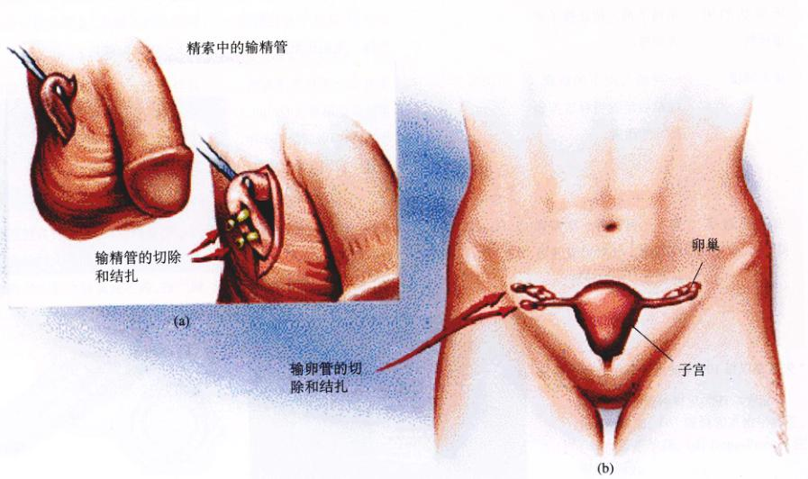
图 59.23 通过绝育而实现的避孕 (a) 输精管结扎术；(b) 输卵管结扎术。
Page 19 / 原始页码 1169
有一小部分女性采用口服避孕药或者采用植入物避孕，这些方法通常会产生不好的副作用，例如形成血栓。此外，这些副作用在新一代的口服避孕药中有减无增，因为其中减少了雌激素和不同的类孕酮物质的含量。此外，这些新的口服避孕药还有一些优点，如减少子宫内膜癌和卵巢癌、心血管疾病和骨质疏松症（老年妇女易患）的发生率；但是，它们会增加乳腺癌和宫颈癌的患病几率。口服避孕药的副作用对于吸烟的女性，尤其是 35 岁以上的吸烟女性尤为突出。现在的调查显示，对于许多女性来说，尽管医生会帮助衡量口服避孕药的利弊关系，但它仍然是一种利大于弊的药物。
5) 阻止胚胎的植入
将避孕环或者其他非规则形状的物体置入子宫是一种非常有效的避孕方式，因为它带来的刺激会阻止胚胎植入子宫壁。这种子宫内的装置 (IUDs) 的失败率只有 1%~5%，它的高效反映出了它的实用性，一旦避孕环被置入体内，它将永远不会失效。这种方法的缺点是：几乎三分之一采取这种避孕方式的女性会出现痛经、经部绞痛，甚至有时会出血，而不得不停止使用。
另一种阻止胚胎着床的方法是为女口服避孕丸剂，它含有的雌激素含量为一般口服避孕药的 50 倍。这种药通过阻碍受精或阻碍受精卵着床而临时代止卵子的发育。这种方法的失败率为 1%~10%，但是很多女性服用这种作用也比较大。这并不是一种值得推荐的常规避孕方法，而只能作为一种紧急避孕的措施。
6) 绝育
一种完全有效的避孕方法就是绝育，通过外科手术切除从性腺运输配子的部分管道（图 59.23）。男性和女性都可以绝育，男性绝育的原理是防止精子进入精液，女性则是防止排出的卵细胞进入子宫。男性的绝育包括输精管切除术，就是从睾丸切除输精管的一部分；而女性类似的绝育手术是切除输卵管的一部分。
Page 20 / 原始页码 1170
小 结
59.1 动物采取有性和无性两种生殖方式
- 孤雌生殖是一种无性生殖，许多昆虫和蜥蜴采取这种生殖方式。
- 哺乳动物的性别是由 Y 染色体决定的，如果含有 Y 染色体就是雄性，没有就是雌性。
59.2 脊椎动物的生殖进化过程导致了体内受精与发育
- 大多数的硬骨鱼采取体外受精的方式，它们将卵子和精子产进水里并且在水里完成受精。两栖类动物采取体外受精的方式，幼体在变态前要经历幼期。
- 爬行类动物和鸟类属于卵生动物，卵产于体外，幼体在卵中完成发育。大多数的哺乳动物属于胎生，幼儿在母体中发育。
59.3 雄性和雌性生殖系统特化行使不同的功能
- 精子离开睾丸并通过附睾和输精管，射精管与尿道合并，一直通达在阴茎的末端。
- 卵细胞在排卵时从卵巢中释放出来，通过伞端的运动被推进输卵管。卵细胞沿着输卵管进入子宫内膜，如果受精，受精卵便植入子宫内膜。
- 如果卵子没有受精，黄体会在月经周期的最后阶段脱落，使得雌激素和孕酮分泌量下降，导致人和猿类月经的发生。
59.4 人类对性生理学已经有了较深入的了解
- 人类性交的生理反应被分为4个阶段：兴奋期、平台期、高潮期和消退期。
- 男性和女性的4个阶段非常的相似，但是男性在高潮后会有一段不应期，而许多女性却没有。
- 有许多种避孕方法，根据用途、效果和耐久性可以将其归类。
问 题
- 卵生、卵胎生和胎生有什么区别？
- 单孔类动物、有袋类动物和有胎盘类哺乳动物的胚胎发育有什么区别？
- 简要阐述精囊、前列腺和尿道球腺的功能。
- 哺乳动物的卵细胞什么时候完成减数分裂？又在什么时候完成第一次减数分裂？
- 成熟的卵泡中的颗粒细胞可以分泌什么激素？这种激素对于子宫内膜起什么作用？
- 人类性交的生理反应分为哪 4 个阶段？在第一个阶段里，男性和女性会发生什么特定的生理变化？
- 口服避孕药如何防止怀孕？
媒体资源
- 学生研究：家鼠的繁殖生物学、子宫功能的进化
- 实践活动：男性生殖系统、阴茎解剖学、女性生殖系统、乳房解剖学
- 精子发生、月经、女性生殖周期、卵子产生
- 阴茎勃起、输精管切除术、输卵管结扎术
- 避孕